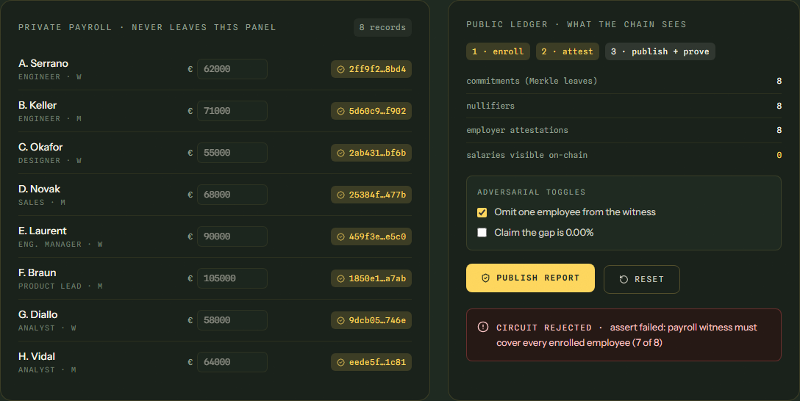

The first employee-verifiable pay-transparency reporting protocol. A company proves its legally required gender pay gap report was computed from its complete, co-signed payroll — while every salary stays sealed in Midnight's private state.
Article 9 requires seven indicators. Article 7 gives every employee the right to ask what their category earns. And today every one of those reports is self-declared: nobody can verify the numbers without seeing everyone's salary.
HR exports payroll to a spreadsheet, computes a gap, publishes a PDF. An employee cannot check they were counted. A works council cannot check nobody was dropped. A regulator can only audit by subpoenaing the whole payroll — the data the law is trying to protect.
Every employee seals their record. The employer co-signs it. A zero-knowledge circuit computes the gap over the sealed set and publishes only the figure plus a proof that it came from all of it. Verification takes seconds. No salary ever leaves the company.
Equilux does not replace the HRIS. Payroll stays in Personio, DATEV or Workday. Equilux is the notary on top: it proves the set was complete and the published figure matches it.
The report must cover every enrolled record. A payroll witness with fewer records than were enrolled is rejected — dropping an employee is cryptographically impossible.
Every record carries an employee-held secret and an employer attestation. The circuit re-derives each commitment; a forged row fails.
Enrollment nullifiers make counting anyone twice unprovable.
The claimed gap is verified in-circuit without division, by cross-multiplied bounds. The circuit accepts one value and rejects every other — one basis point off fails.
Plus an inclusion receipt for every employee: a Merkle path proving their record is inside the numbers, revealing nothing about anyone.
Employee seals salary + gender marker as a commitment and a nullifier. Nothing else touches the chain.
The employer, gated by its secret key, attests each commitment it recognizes from payroll.
Over the full witness: every record enrolled and attested, pairwise distinct, count equals enrolled, gap claim verified. Discloses only the report.
Any employee proves their leaf is in the commitment tree against the on-chain root.
Every witness value that reaches the ledger passes an explicit disclose(). The compiler refuses anything else.

| It does not claim | What is true instead |
|---|---|
| Salaries hidden from HR | HR already holds payroll. Hidden from the public, colleagues, the regulator and Equilux. Wave 3: payroll provider attests. |
| The Article 10 trigger | Our flag is the company-wide mean ≥ 5%, named for what it measures. Article 10 is per worker category — Wave 2. |
| The full Article 9 return | One of seven metrics: the mean. Median, variable pay, quartiles follow. |
| Production scale | A sized instance: 32 commitment slots, 16-record witness. Sizing is a compile-time parameter. |
| A model of identity | Binary gender markers, as the Directive's reporting annex is written today. |
Compact contract, 4 circuits with keys · 21 tests on the compiled circuits · end-to-end run on a Midnight network with real proofs · interactive demo with adversarial toggles · honest scope.
Public testnet deployment with the site reading live state · Article 7 cohort-safe category query (k-anonymity) · worker categories · median · employer / employee / regulator screens · Lace wallet writes.
Payroll-provider attestation (Personio / DATEV mock) · per-category Article 10 trigger · Article 9-shaped filing pack with proof hash + verify URL · instance sized past 250 · one named pilot.
Works councils that don't trust the numbers. GDPR-sensitive employers. Regulators who want completeness without holding payroll.
Workday, SAP, Sysarb, Figures. They compute pay. We prove the set was complete and the figure matches — next to them, not instead of them.
A forced legal deadline plus a problem only dual-ledger selective disclosure solves honestly. Incumbents can copy a dashboard; they cannot copy the proof.